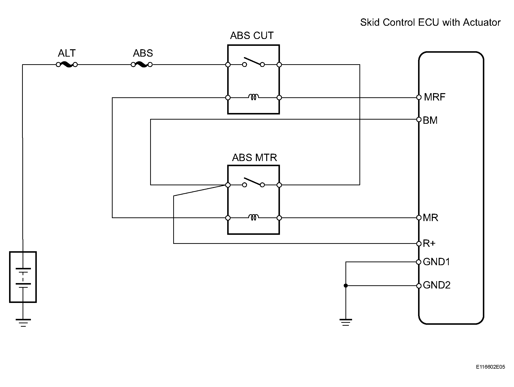

DTC C0273/13 Open in ABS Motor Relay Circuit; DTC C0274/14 Short to B+ in ABS Motor Relay Circuit; DTC C1361/91 Short Circuit in ABS Motor Fail Safe Relay Circuit: Wiring Diagram
Fig 1: Relay Circuit Wiring Diagram

Courtesy of © TOYOTA, LICENSE AGREEMENT TMS1002